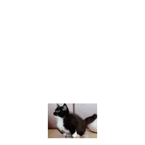
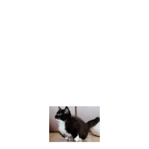

-
Bingus
I fucking hate bingus. Stupid bald idiot doesn't even have hair. I only wish suffering onto this "cat".
Even thinking about this monstrosity causes me severe mental anguish.
-
Luna
Luna the cat is likely the most intelligent and secretive cat on this list, as they often wear glasses to hide their eyes.
I fear the day that Luna will run for president but they are pretty cute so it wouldn't be that bad tbh.
-
Meevin
Meevin the cat is one of the most airplane cats that I've ever seen. It is impressive how similar Meevin and a Boeing 777 really are.
Very silly, however meevin does not have much else going for him unfortunately.
-
Borzoi
This is not a cat. However, I do believe this dog breed deserves a spot on this funny cat top 10.
They are often very polite and sociable, making them very likeable. Many people don't know but they actually make cartoon sound effects when touched.


-
Panko
Panko the cat is a silly cat because there is a cat named Milly who looks like her. Panko is kinda lazy though but it is a pleasant sight on the eyes.
She is often found sleeping and somehow being silly at the same time.also theres 4321523 pictures so automatic win

-
Milly
Milly the cat is know for being the most silly cat on the planet. However, due to the numerous war crimes and corruption caused by this individual I shrimply cannot put her on #1.
I apologize, but any further comments would cause legal trouble.
-
Gosha (floppa)
Gosha the cat, also known as Floppa, is one hell of a cat(?) with awesome and epic ears that flop all over the place.
My favorite floppa line is the one where he said "it's floppin' time" and he started flopping all over the bodies of his victims (balloons).

-
Uni
Uni the cat goes by many names, such as "how to make a bomb". People often want you to look him up on google.
Uni is often misidentified as "Maxwell", who is a blatant copy of our beloved balls mouth and local drug trafficker Uni. 

-
Jinx
Jinx the cat is a funny and silly cat because she has funny paws. We share the same hatred and fear for eggs which makes her very relatable and cool.
She is by far the most silly looking cat in this list.
-
Karel
Karel, the most cat of them all, is by far the best cat of all 10 of these cats. It is honestly amazing that we can live in the same world and timelime as him.
He is very good at eating important wires if they are in motion. My favorite thing he does is waking up at around 5am and clawing on doors to get in/out. Karel is for some reason also named Fret or Fritz.